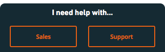
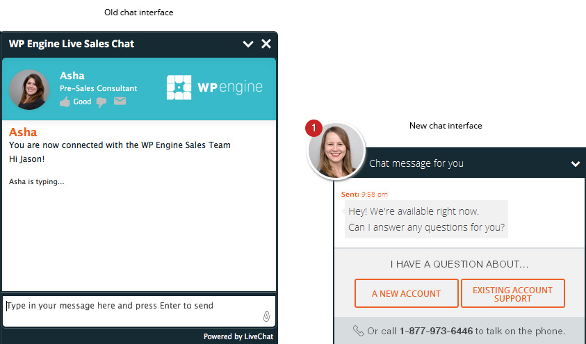
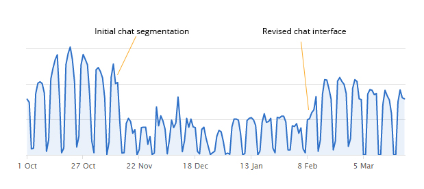

<!DOCTYPE html><html><head><meta charset=UTF-8 /><meta content="IE=edge,chrome=1" http-equiv=X-UA-Compatible /><meta content="width=device-width" name=viewport /><script>var host = "hellojason.net";
if ((host == window.location.host) && (window.location.protocol != "https:"))
  window.location.protocol = "https";</script><meta content="index,follow" name=robots /><link href="../../apple-touch-icon.png?v=Gvm449pRYq" rel=apple-touch-icon sizes=180x180 /><link href="../../favicon-32x32.png?v=Gvm449pRYq" rel=icon sizes=32x32 type="image/png"/><link href="../../favicon-16x16.png?v=Gvm449pRYq" rel=icon sizes=16x16 type="image/png"/><link href="/site.webmanifest?v=Gvm449pRYq" rel=manifest /><link color="#a432f4" href="../../safari-pinned-tab.svg?v=Gvm449pRYq" rel=mask-icon /><link href="../../favicon.ico?v=Gvm449pRYq" rel="shortcut icon"/><meta content="#a432f4" name=msapplication-TileColor /><meta content="#ffffff" name=theme-color /> <title>Hello Jason / WP Engine Livechat</title><meta content="Design and development portfolio of Jason Cross" name=description /><link href="../../assets/stylesheets/site-ecbcdad8.css" rel=stylesheet /><link href="https://hellojason.net//projects/wpengine-livechat/" rel=canonical /><script>(function(i,s,o,g,r,a,m){i['GoogleAnalyticsObject']=r;i[r]=i[r]||function(){
(i[r].q=i[r].q||[]).push(arguments)},i[r].l=1*new Date();a=s.createElement(o),
m=s.getElementsByTagName(o)[0];a.async=1;a.src=g;m.parentNode.insertBefore(a,m)
})(window,document,'script','//www.google-analytics.com/analytics.js','ga');

ga('create', 'UA-48926813-1', 'auto');
ga('send', 'pageview');
ga('set', 'anonymizeIp', true);</script></head><body class="projects projects_wpengine-livechat projects_wpengine-livechat_index"></body><header class=banner role=banner><div id=primary-navigation role=navigation><div class=navbar-header><a class=logo href="/" title="Hello Jason Portfolio"><svg id=hellojason-logo xmlns="http://www.w3.org/2000/svg" width="0.56in" height="0.56in" viewBox="0 0 40.6 40.6"><defs><style>.cls-1{fill:#fbac2d;}</style></defs><title>hello-jason-logo</title><path class=cls-1 d="M9.3,13.1a4.11,4.11,0,0,1,2.8-.7H29.9a4.42,4.42,0,0,1,2.9.7,3.39,3.39,0,0,1,.8,2.5v0.5H28.4A1.43,1.43,0,0,0,27,17.5v0.9q3.75,0,4.8.9c0.7,0.6.9,2.9,0.9,2.9a28.1,28.1,0,0,1,.1,2.9V29a1.43,1.43,0,0,1-1.4,1.4h-8A1.43,1.43,0,0,1,22,29V28.1c0-1.9.2-3.1,0.7-3.6a3.37,3.37,0,0,1,1.7-.6,1.42,1.42,0,0,0,1.4-1.2,1.33,1.33,0,0,0-1.4-1.1H16.9A1.43,1.43,0,0,0,15.5,23v0.7c1.6,0,2.7.2,3.2,0.7a5.14,5.14,0,0,1,.6,2.3,23.48,23.48,0,0,1,.1,2.6A1.33,1.33,0,0,1,18,30.4H11A1.43,1.43,0,0,1,9.6,29V23.5c0-2.2.3-3.5,0.8-4.1a4.15,4.15,0,0,1,1.8-.7,15.26,15.26,0,0,1,1.8-.1,1.23,1.23,0,0,0,.4-1.2A1.33,1.33,0,0,0,13,16.2H8.5V15.5a2.92,2.92,0,0,1,.8-2.4" transform="translate(-0.7 -0.7)"/><path class=cls-1 d="M21,3.4A17.6,17.6,0,1,1,3.4,21,17.63,17.63,0,0,1,21,3.4m0-2.7A20.3,20.3,0,1,0,41.3,21,20.31,20.31,0,0,0,21,.7h0Z" transform="translate(-0.7 -0.7)"/></svg><span class=tagline>Hello, I'm Jason.</span></a></div><div id=primary-container><ul class=nav><li class=nav-item-blog><a href='/'>Blog</a></li><li class=nav-item-projects><a href='/projects/'>Projects</a></li><li class=nav-item-about><a href='/about/'>About</a></li></ul></div></div><div class=container><h1 class=title>WP Engine Livechat</h1></div><svg class=icon-arrow-downright xmlns="http://www.w3.org/2000/svg" width="8.4" height="8.5" viewBox="0 0 8.4 8.5"><title>icon-arrow-downright</title><path d="M2.3,8.5,0,6.1H4.5L0,1.6,1.6,0,6.1,4.5V0L8.4,2.3V8.5Z"/></svg></header></html><main class=container role=main><section id=project-single><aside><dl><dt>Project</dt><dd>WP Engine Livechat</dd><dt>Year</dt><dd>2016</dd><dt>Software</dt><dd>Livechat</dd><dt>Roles</dt><dd>Concept, Design</dd></dl><hr></hr></aside><main role=main><h2>Summary</h2><p>WP Engine uses a chat feature on <a href="https://wpengine.com">wpengine.com</a> to answer questions for users browsing the site. However, a large number of existing customers would use this chat interface to submit technical support requests, which was an inefficient use of the sales team's time and expertise.</p><p>This was a clear indication that many customers were not aware of the appropriate process for contacting our dedicated support team. So, an abrupt solution was put into place in November allowing a user to choose whether they were a new or existing customer, then that user would be sent to either the sales or support team. Our sales team saw a large reduction in chat volume as a result (see graph below) and support satisfaction remained consistent, which was great.</p><p>Since visitors who chat are more likely to convert into customers, I was tasked with increasing the number of sales chat engagements while retaining this user segmentation. I was also tasked with creating a custom Livechat theme to match WP Engine's brand and make it feel more integrated with the website (rather than a separate embedded piece of software).</p><h2>Strategy</h2><p>I researched existing chat applications such as HipChat, Slack, and Facebook Messenger, identifying features that users may expect to experience. I setup a demo Livechat account to work in a safe playground. I also setup a separate instance of the WP Engine website so I could demo the full experience for stakeholders.</p><h2>Implementation</h2><p>I designed the new sales chat interface to trigger an instinctual, emotional response to the chat window. It pops up after a few seconds to draw the eye, and the overall design suggests that Rebecca (a real sales team employee) has already initiated the conversation. The number 1 enclosed in a red circle creates a sense of urgency as if it were an unaccomplished task, like an unread text message or email.</p><h2>Results</h2><p>We saw an increase of over 175% for sales chat engagements within days of launching the newly designed segmented chat window, and that increase has remained consistent.</p><h2>What I Learned</h2><ul><li>Livechat has a good API with documentation</li><li>Effective design caters to human instincts and expectations</li><li>iframes are neat (not)</li></ul></main></section></main><footer id=footer></footer><script src="//assets.codepen.io/assets/embed/ei.js" async=true></script>